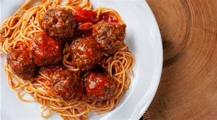

Tips de cocina creativa
Estos consejos te ayudarán a mejorar el sabor, la presentación y el aprovechamiento de tus ingredientes.
La creatividad en la cocina no solo está en las recetas, sino en cómo usas lo que ya tienes a la mano.
Aprende a improvisar con estilo y sin estrés.
Reutiliza arroz o pollo de días anteriores en croquetas, wraps o sopas. ¡Nada se desperdicia!
Combina ingredientes crujientes y suaves; colores vivos dan vida a cualquier plato.

